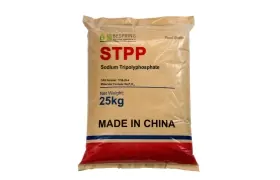
三聚磷酸钠 (STPP)
CAS:7758-29-4
食品级磷酸盐，用于肉类加工、海鲜和食品制造行业的保水性、乳化和稳定。
肉类加工 海鲜加工 家禽产品 乳制品 洗涤剂 查看产品用于全球工业的磷酸盐成分
面向食品、饲料及工业采购的化工原料。
百泉化工为国际 B2B 买家供应磷酸盐、食品原料、饲料添加剂和工业化学原料。从所需的等级、规格、应用和目的地市场的文件开始。
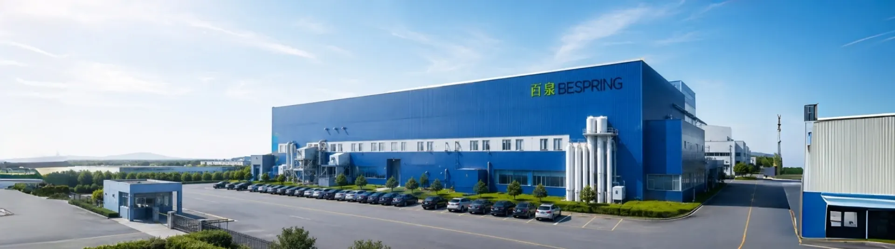
输入产品名称、简称或 CAS 号
按行业分类的解决方案
核心产品组合
浏览磷酸盐以外的产品类别，然后与我们的团队确认等级、规格、包装和文件。

CAS:7758-29-4
食品级磷酸盐，用于肉类加工、海鲜和食品制造行业的保水性、乳化和稳定。
肉类加工 海鲜加工 家禽产品 乳制品 洗涤剂 查看产品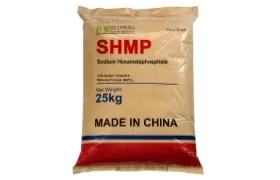
CAS:10124-56-8
多功能磷酸盐用于水处理、洗涤剂、食品加工和工业防垢及螯合应用。
水处理 洗涤剂 乳制品 饮料加工 陶瓷 查看产品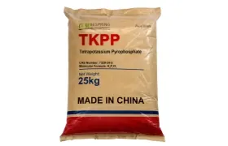
CAS:7320-34-5
食品级焦磷酸四钾用作螯合剂、乳化剂、缓冲剂和保水性添加剂，适用于肉类加工、海鲜、乳制品、水处理和工业应用。
肉类加工 海鲜加工 乳制品 水处理 工业清洗 查看产品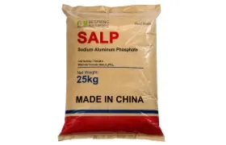
CAS:7785-88-8
磷酸铝钠(SALP)是一种食品级膨松酸，用于泡打粉系统、烘焙配方和工业食品加工应用中，以控制气体释放并改善产品质构。
烘焙行业 烘焙食品 蛋糕和面粉加工 食品制造 膨松系统 查看产品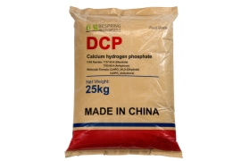
CAS:7757-93-9 / 7789-77-7
产品简介： 磷酸氢钙(DCP)是动物营养、饲料预混料生产和畜牧业中广泛应用的高质量钙磷源。是家禽、猪、牛和水产养殖饲料配方的必要矿物添加剂。
动物营养 家禽饲料 饲料预混料 矿物质补充剂 农业化肥原料 查看产品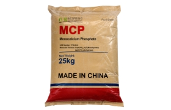
CAS:7758-23-8
磷酸二氢钙（MCP）可作为钙和磷原料。饲料、食品等用途须分别选择相应等级，并结合含量、杂质限值、应用条件和目标市场要求评估。
动物营养 水产养殖饲料 食品营养强化 矿物质补充剂 磷酸盐肥料原料 查看产品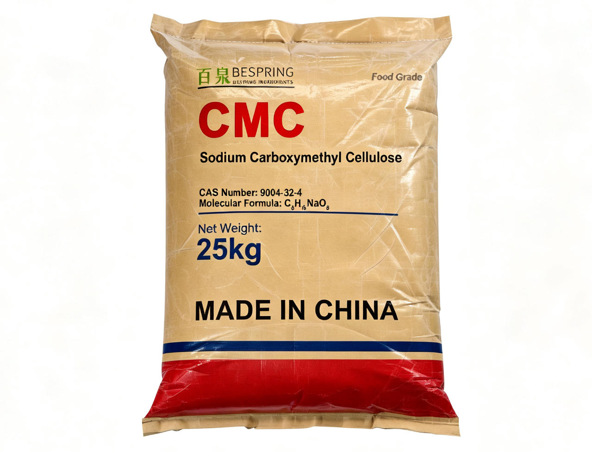
CAS:9004-32-4
一种多功能纤维素衍生物，广泛用作食品加工、洗涤剂配方、采矿作业和各种工业应用中的增稠剂、稳定剂、粘合剂和保水剂。
食品配料 洗涤剂制造 工业化学品 矿业化学品 造纸 陶瓷 查看产品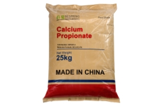
CAS:4075-81-4
食品级丙酸钙用于允许使用的烘焙等食品配方，帮助控制霉菌；效果取决于配方、加工、包装和储存条件。
烘焙食品 食品防腐 乳制品 加工食品 饲料添加剂 查看产品核心专业知识
按化学特性、等级、功能和应用对比磷酸盐系列。百泉化工为加工商、配方制造商和分销商提供规格匹配和产品评估支持。
买家资格支持
有用的报价不仅仅是价格。在商业批准之前，调整产品身份、等级、测试标准和运输要求。
比较含量测定、杂质限值、粒径、pH值、物理形态和测试方法与您的目标规格。
请求当前规格或 TDS、SDS、样品 COA 和适用的质量或监管文件。
定义预期应用和评估标准，以便样品代表正在合格的等级。
确认包装尺寸、托盘或集装箱要求、目的地港口、国际贸易术语和装运单据需求。
单一供应商，多个行业
全球供应链和出口能力
关于我们
百泉化工将精选磷酸盐生产与更广泛的化学成分供应网络相结合。我们为食品加工、动物营养、水处理、清洁、农业和矿产加工领域的B2B买家提供产品匹配、资质文件和出口协调服务。
1970s 制造根源
20+ 行业应用
100+ 化工产品
60+ 服务国家
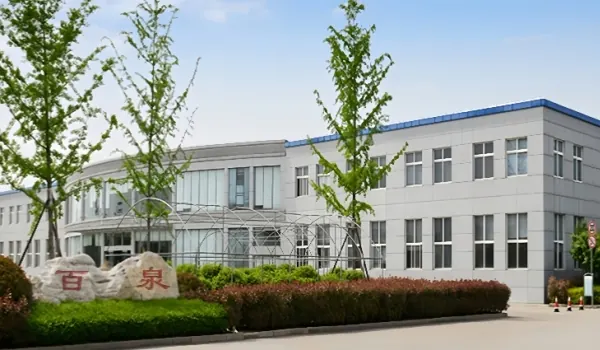
百泉化工出口到欧洲、亚洲、中东、北美、南美、非洲和大洋洲的60多个国家和地区，通过质量保证、技术文件、法规合规支持和出口物流协调为长期B2B采购提供支持。
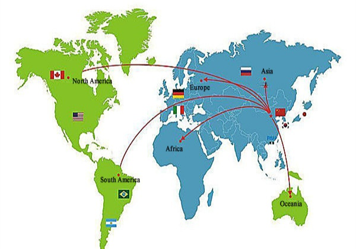
百泉化工在中国拥有综合化工生产和出口体系，包括制造基地、专业生产车间、独立的质量控制实验室以及专用仓储设施。
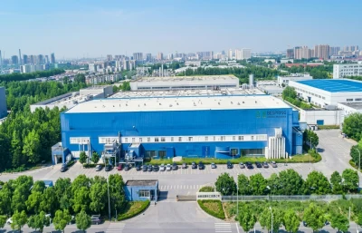
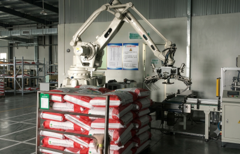
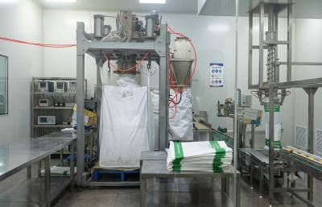
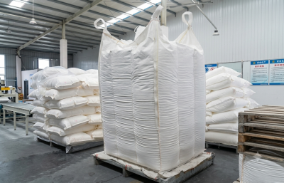
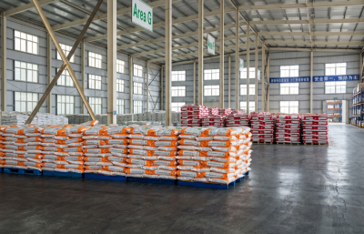
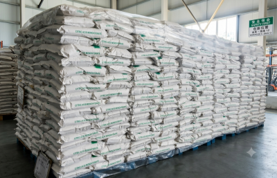
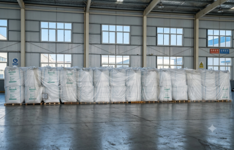
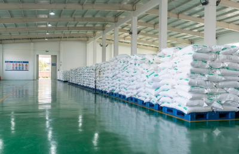
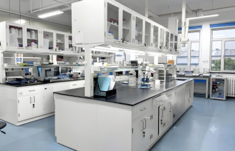
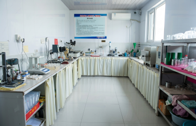
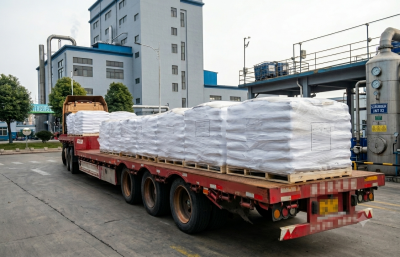
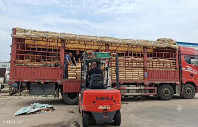
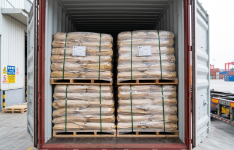
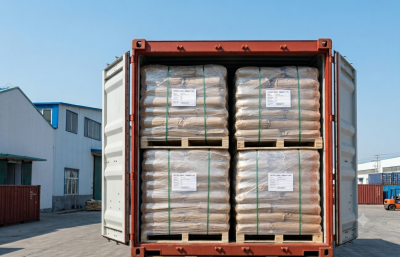
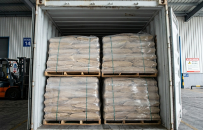
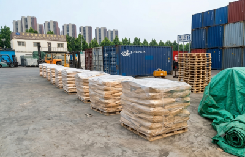
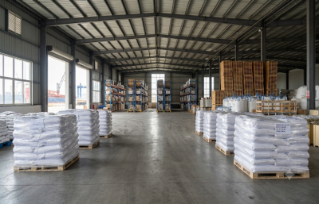
从成分到结果
了解百泉化工成分如何满足食品、饲料、水处理和工业制造的实际配方和工艺需求。
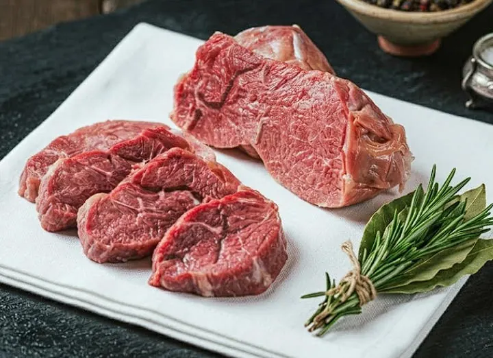
三聚磷酸钠 · INS 451(i)
一种实用的磷酸盐应用，用于肉类和家禽产品中的水分管理、质构支持、乳化稳定性和一致加工。
阅读应用案例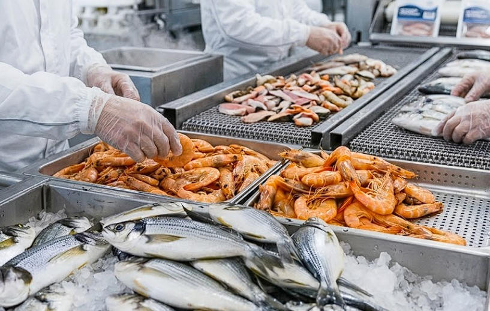
焦磷酸四钾 · INS 450(v)
用于需要缓冲、螯合和水分管理的海鲜配方的钾基磷酸盐功能。
阅读应用案例丙酸钙 · E282
防腐剂应用，专注于面包、面包卷和其他酵母烘焙产品的霉菌控制和保质期规划。
阅读应用案例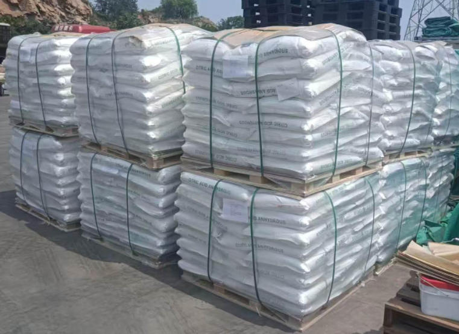
磷酸二氢钙 · 饲料级
用于在家禽饲料和预混系统中提供可用磷和钙的矿物饲料应用。
阅读应用案例六偏磷酸钠 · CAS 10124-56-8
使用螯合和阈值效应的水处理应用，以支持工业系统中的防垢程序。
阅读应用案例三聚磷酸钠 · 工业级
一种用于粉末配方中水软化、污垢悬浮和清洁性能的洗涤剂-助洗剂应用。
阅读应用案例STPP · SHMP · TSPP · TKPP · 混合物
以净出品率、解冻损失、蒸煮损失与感官品质评价的工厂试验框架。
阅读应用案例SAPP · SALP · MCP · DAP · 混合物
匹配反应速率、中和值和气体释放时间到混合、保持和烘烤。
阅读应用案例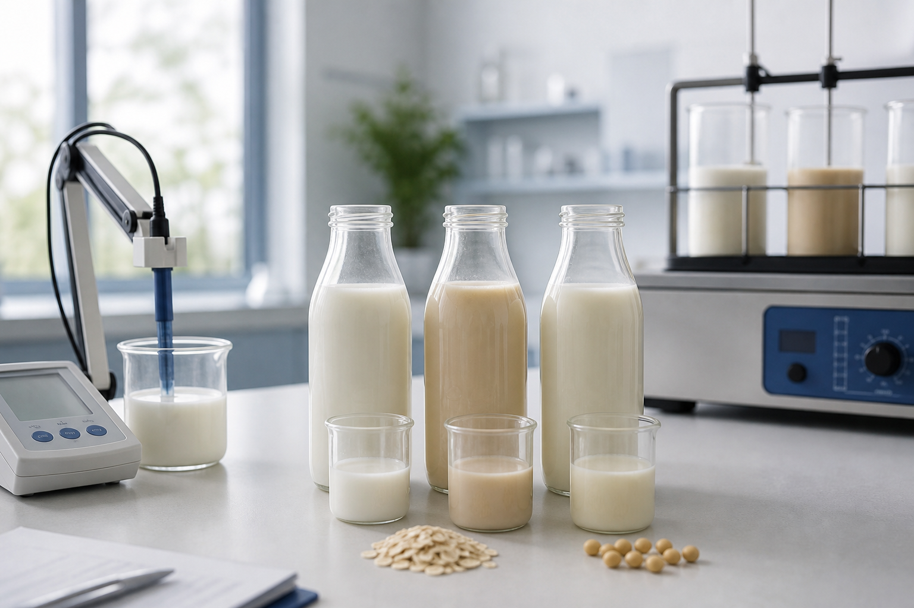
DSP · DKP · MKP · TKP · 磷酸
pH 值控制、热稳定性、乳化、钠目标和保质期的配方筛选器。
阅读应用案例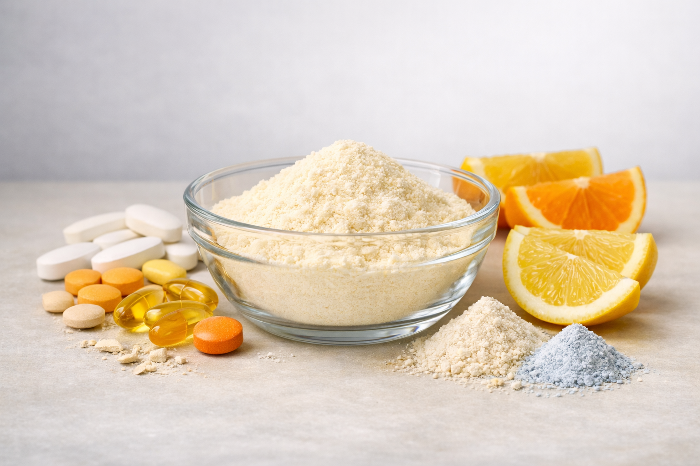
TCP · DCP · MCP · MKP
按元素含量、纯度、粒径、分散度和性能选择矿物磷酸盐。
阅读应用案例食品、饲料和工业化学品采购的规格导向采购指南。
采购常见问题
产品的适用性取决于确切的等级、规格、应用和目标市场。这些答案确定了一个实际的起点。
百泉化工供应磷酸盐原料、食品原料、饲料添加剂、水处理化学品、矿用化学品、清洁原料和化肥原料。
百泉化工生产选择性磷酸盐产品，并通过其合格的供应网络提供更广泛的产品组合。应确认所报告的具体产品的生产或供应状况、生产地点和辅助文件。
根据产品和等级，买方可以索取当前规格或 TDS、SDS、样品 COA、包装详情和适用的质量或监管文件。
是。食品级磷酸盐选择包括钠、钾和钙磷酸盐以及功能性混合物。根据所要求的规格、应用、目的地市场的要求和佐证文件评估是否合适。
包括产品名称、等级或标准、所需规格、应用、年度或试验数量、包装、目的地港口以及任何文件或合规要求。